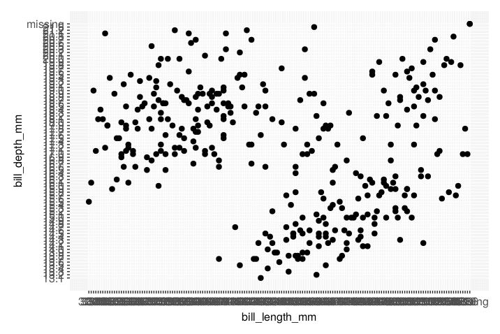
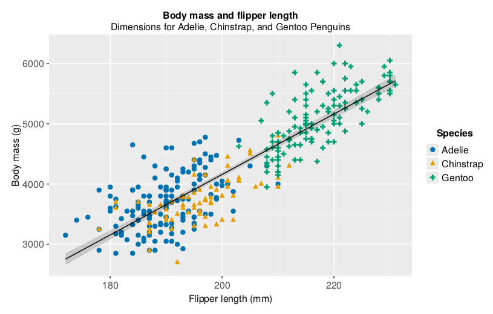
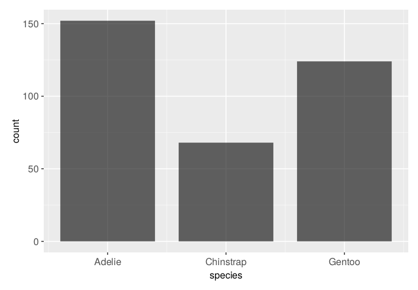
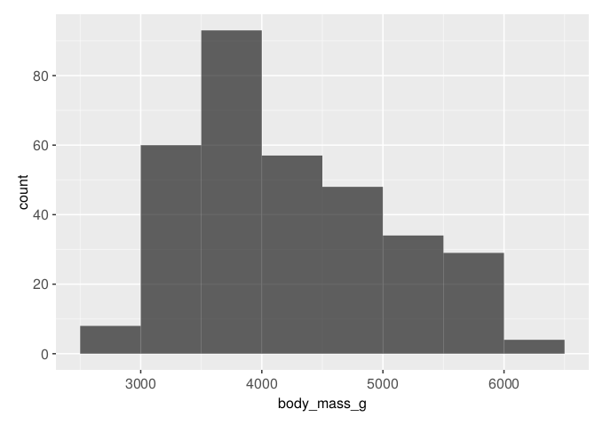
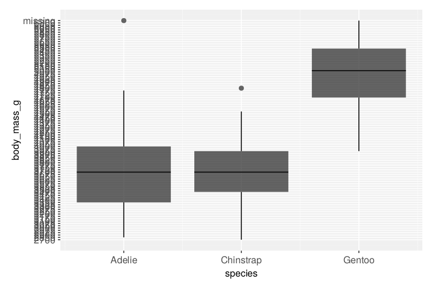

using Tidier2 Data Visualization
2.1 Introduction
Julia has several systems for creating plots, but TidierPlots.jl is the one that stays coloses to the gramma of graphics (GOG) as implemented in ggplot2. The GOG is a coherent system for describing and buildings plots with the big advantage that learning one system allows you to apply it in many different settings.
This chapter will teach you how to visualize your data using TidierPlots.jl. We will start by creating a simple scatterplot and use that to introduce aesthetic mappings and geometric objects – the fundamental building blocks of the GOG. We will then walk you through visualizing distributions of single variables as well as visualizing relationships between two or more variables. We will finish off with saving your plots and troubleshooting tips.
2.1.1 Prerequisits
This chapter focuses on TidierPlots.jl, one of the core packages of Tidier.jl. Load Tidier.jl by running:
That one line of code loads the Tidier.jl collection of pacakges that you will use in almost every data analysis.
If you run this code and get the error message error, then you first have to install the package by running:
Pkg.add("Tidier")
using TidierData Resolving package versions... No Changes to `~/.julia/environments/v1.9/Project.toml`
No Changes to `~/.julia/environments/v1.9/Manifest.toml`In addition to Tidier.jl, we will also use the PalmerPenguins.jl package, which includes a dataset containing body measurements of penguins on three islands in the Palmer Archipelago.
using PalmerPenguins, DataFrames
penguins = DataFrame(PalmerPenguins.load())344×7 DataFrame
319 rows omitted
| Row | species | island | bill_length_mm | bill_depth_mm | flipper_length_mm | body_mass_g | sex |
|---|---|---|---|---|---|---|---|
| String15 | String15 | Float64? | Float64? | Int64? | Int64? | String7 | |
| 1 | Adelie | Torgersen | 39.1 | 18.7 | 181 | 3750 | male |
| 2 | Adelie | Torgersen | 39.5 | 17.4 | 186 | 3800 | female |
| 3 | Adelie | Torgersen | 40.3 | 18.0 | 195 | 3250 | female |
| 4 | Adelie | Torgersen | missing | missing | missing | missing | missing |
| 5 | Adelie | Torgersen | 36.7 | 19.3 | 193 | 3450 | female |
| 6 | Adelie | Torgersen | 39.3 | 20.6 | 190 | 3650 | male |
| 7 | Adelie | Torgersen | 38.9 | 17.8 | 181 | 3625 | female |
| 8 | Adelie | Torgersen | 39.2 | 19.6 | 195 | 4675 | male |
| 9 | Adelie | Torgersen | 34.1 | 18.1 | 193 | 3475 | missing |
| 10 | Adelie | Torgersen | 42.0 | 20.2 | 190 | 4250 | missing |
| 11 | Adelie | Torgersen | 37.8 | 17.1 | 186 | 3300 | missing |
| 12 | Adelie | Torgersen | 37.8 | 17.3 | 180 | 3700 | missing |
| 13 | Adelie | Torgersen | 41.1 | 17.6 | 182 | 3200 | female |
| ⋮ | ⋮ | ⋮ | ⋮ | ⋮ | ⋮ | ⋮ | ⋮ |
| 333 | Chinstrap | Dream | 45.2 | 16.6 | 191 | 3250 | female |
| 334 | Chinstrap | Dream | 49.3 | 19.9 | 203 | 4050 | male |
| 335 | Chinstrap | Dream | 50.2 | 18.8 | 202 | 3800 | male |
| 336 | Chinstrap | Dream | 45.6 | 19.4 | 194 | 3525 | female |
| 337 | Chinstrap | Dream | 51.9 | 19.5 | 206 | 3950 | male |
| 338 | Chinstrap | Dream | 46.8 | 16.5 | 189 | 3650 | female |
| 339 | Chinstrap | Dream | 45.7 | 17.0 | 195 | 3650 | female |
| 340 | Chinstrap | Dream | 55.8 | 19.8 | 207 | 4000 | male |
| 341 | Chinstrap | Dream | 43.5 | 18.1 | 202 | 3400 | female |
| 342 | Chinstrap | Dream | 49.6 | 18.2 | 193 | 3775 | male |
| 343 | Chinstrap | Dream | 50.8 | 19.0 | 210 | 4100 | male |
| 344 | Chinstrap | Dream | 50.2 | 18.7 | 198 | 3775 | female |
2.2 First steps
2.2.1 The penguins data frame
penguins344×7 DataFrame
319 rows omitted
| Row | species | island | bill_length_mm | bill_depth_mm | flipper_length_mm | body_mass_g | sex |
|---|---|---|---|---|---|---|---|
| String15 | String15 | Float64? | Float64? | Int64? | Int64? | String7 | |
| 1 | Adelie | Torgersen | 39.1 | 18.7 | 181 | 3750 | male |
| 2 | Adelie | Torgersen | 39.5 | 17.4 | 186 | 3800 | female |
| 3 | Adelie | Torgersen | 40.3 | 18.0 | 195 | 3250 | female |
| 4 | Adelie | Torgersen | missing | missing | missing | missing | missing |
| 5 | Adelie | Torgersen | 36.7 | 19.3 | 193 | 3450 | female |
| 6 | Adelie | Torgersen | 39.3 | 20.6 | 190 | 3650 | male |
| 7 | Adelie | Torgersen | 38.9 | 17.8 | 181 | 3625 | female |
| 8 | Adelie | Torgersen | 39.2 | 19.6 | 195 | 4675 | male |
| 9 | Adelie | Torgersen | 34.1 | 18.1 | 193 | 3475 | missing |
| 10 | Adelie | Torgersen | 42.0 | 20.2 | 190 | 4250 | missing |
| 11 | Adelie | Torgersen | 37.8 | 17.1 | 186 | 3300 | missing |
| 12 | Adelie | Torgersen | 37.8 | 17.3 | 180 | 3700 | missing |
| 13 | Adelie | Torgersen | 41.1 | 17.6 | 182 | 3200 | female |
| ⋮ | ⋮ | ⋮ | ⋮ | ⋮ | ⋮ | ⋮ | ⋮ |
| 333 | Chinstrap | Dream | 45.2 | 16.6 | 191 | 3250 | female |
| 334 | Chinstrap | Dream | 49.3 | 19.9 | 203 | 4050 | male |
| 335 | Chinstrap | Dream | 50.2 | 18.8 | 202 | 3800 | male |
| 336 | Chinstrap | Dream | 45.6 | 19.4 | 194 | 3525 | female |
| 337 | Chinstrap | Dream | 51.9 | 19.5 | 206 | 3950 | male |
| 338 | Chinstrap | Dream | 46.8 | 16.5 | 189 | 3650 | female |
| 339 | Chinstrap | Dream | 45.7 | 17.0 | 195 | 3650 | female |
| 340 | Chinstrap | Dream | 55.8 | 19.8 | 207 | 4000 | male |
| 341 | Chinstrap | Dream | 43.5 | 18.1 | 202 | 3400 | female |
| 342 | Chinstrap | Dream | 49.6 | 18.2 | 193 | 3775 | male |
| 343 | Chinstrap | Dream | 50.8 | 19.0 | 210 | 4100 | male |
| 344 | Chinstrap | Dream | 50.2 | 18.7 | 198 | 3775 | female |
@glimpse(penguins)Rows: 344
Columns: 7
.species InlineStrings.String15Adelie, Adelie, Adelie, Adelie, Adelie, Ade
.island InlineStrings.String15Torgersen, Torgersen, Torgersen, Torgersen,
.bill_length_mmUnion{Missing, Float64}39.1, 39.5, 40.3, missing, 36.7, 39.3, 38.
.bill_depth_mm Union{Missing, Float64}18.7, 17.4, 18.0, missing, 19.3, 20.6, 17.
.flipper_length_mmUnion{Missing, Int64}181, 186, 195, missing, 193, 190, 181, 19
.body_mass_g Union{Missing, Int64}3750, 3800, 3250, missing, 3450, 3650, 3625,
.sex Union{Missing, InlineStrings.String7}male, female, female, missin2.2.2 Ultimate goal
2.2.3 Creating a plot
@ggplot(penguins, aes(x = bill_length_mm, y = bill_depth_mm)) +
@geom_point()
TidierPlots.GGPlot(Any[TidierPlots.Geom(Dict("x" => :bill_length_mm, "y" => :bill_depth_mm), Dict{String, Any}("geom_name" => "geom_point"), Layer(identity, nothing, Any[], {}), Layer(AlgebraOfGraphics.Visual(MakieCore.Scatter, {}), nothing, Any[], {}), Layer(identity, nothing, Any[], {}), ["x", "y"], Dict("strokecolor" => "strokecolor", "colour" => "color", "glowcolor" => "glowcolor", "stroke" => "strokewidth", "label" => "text", "alpha" => "alpha", "strokecolour" => "strokecolor", "size" => "markersize", "glowcolour" => "glowcolor", "errorbar_direction" => "direction"…), Dict{Any, Any}())], Dict("x" => :bill_length_mm, "y" => :bill_depth_mm), Layer(identity, 344×7 DataFrameColumns
Row │ species island bill_length_mm bill_depth_mm flipper_length_mm ⋯
│ String15 String15 Float64? Float64? Int64? ⋯
─────┼──────────────────────────────────────────────────────────────────────────
1 │ Adelie Torgersen 39.1 18.7 181 ⋯
2 │ Adelie Torgersen 39.5 17.4 186
3 │ Adelie Torgersen 40.3 18.0 195
4 │ Adelie Torgersen missing missing missing
5 │ Adelie Torgersen 36.7 19.3 193 ⋯
6 │ Adelie Torgersen 39.3 20.6 190
7 │ Adelie Torgersen 38.9 17.8 181
8 │ Adelie Torgersen 39.2 19.6 195
9 │ Adelie Torgersen 34.1 18.1 193 ⋯
10 │ Adelie Torgersen 42.0 20.2 190
11 │ Adelie Torgersen 37.8 17.1 186
⋮ │ ⋮ ⋮ ⋮ ⋮ ⋮ ⋱
335 │ Chinstrap Dream 50.2 18.8 202
336 │ Chinstrap Dream 45.6 19.4 194 ⋯
337 │ Chinstrap Dream 51.9 19.5 206
338 │ Chinstrap Dream 46.8 16.5 189
339 │ Chinstrap Dream 45.7 17.0 195
340 │ Chinstrap Dream 55.8 19.8 207 ⋯
341 │ Chinstrap Dream 43.5 18.1 202
342 │ Chinstrap Dream 49.6 18.2 193
343 │ Chinstrap Dream 50.8 19.0 210
344 │ Chinstrap Dream 50.2 18.7 198 ⋯
2 columns and 323 rows omitted, Any[], {}), Dict{Any, Any}("height" => 400, "data" => :penguins, "width" => 600))
2.2.4 Adding aesthetics and layers
# TODO: should automatically omitt rows with missing variables!
penguins_no_missing = dropmissing(penguins)
@ggplot(penguins_no_missing, aes(x = flipper_length_mm, y = body_mass_g)) +
@geom_point(aes(color = species, shape = species)) +
@geom_smooth(method = "lm") +
@labs(
title = "Body mass and flipper length",
subtitle = "Dimensions for Adelie, Chinstrap, and Gentoo Penguins",
x = "Flipper length (mm)", y = "Body mass (g)",
color = "Species", shape = "Species"
)
TidierPlots.GGPlot(Any[TidierPlots.Geom(Dict("shape" => :species, "x" => :flipper_length_mm, "color" => :species, "y" => :body_mass_g), Dict{String, Any}("geom_name" => "geom_point"), Layer(identity, nothing, Any[], {}), Layer(AlgebraOfGraphics.Visual(MakieCore.Scatter, {}), nothing, Any[], {}), Layer(identity, nothing, Any[], {}), ["x", "y"], Dict("strokecolor" => "strokecolor", "colour" => "color", "glowcolor" => "glowcolor", "stroke" => "strokewidth", "label" => "text", "alpha" => "alpha", "strokecolour" => "strokecolor", "size" => "markersize", "glowcolour" => "glowcolor", "errorbar_direction" => "direction"…), Dict{Any, Any}()), TidierPlots.Geom(Dict("x" => :flipper_length_mm, "y" => :body_mass_g), Dict{String, Any}("method" => "lm", "geom_name" => "geom_smooth"), Layer(identity, nothing, Any[], {}), Layer(identity, nothing, Any[], {}), Layer(AlgebraOfGraphics.LinearAnalysis{MakieCore.Automatic}(200, false, MakieCore.Automatic(), 0.95), nothing, Any[], {}), ["x", "y"], Dict("strokecolor" => "strokecolor", "colour" => "color", "glowcolor" => "glowcolor", "stroke" => "strokewidth", "label" => "text", "alpha" => "alpha", "strokecolour" => "strokecolor", "size" => "markersize", "glowcolour" => "glowcolor", "errorbar_direction" => "direction"…), Dict{Any, Any}())], Dict("x" => :flipper_length_mm, "y" => :body_mass_g), Layer(identity, 333×7 DataFrameColumns
Row │ species island bill_length_mm bill_depth_mm flipper_length_mm ⋯
│ String15 String15 Float64 Float64 Int64 ⋯
─────┼──────────────────────────────────────────────────────────────────────────
1 │ Adelie Torgersen 39.1 18.7 181 ⋯
2 │ Adelie Torgersen 39.5 17.4 186
3 │ Adelie Torgersen 40.3 18.0 195
4 │ Adelie Torgersen 36.7 19.3 193
5 │ Adelie Torgersen 39.3 20.6 190 ⋯
6 │ Adelie Torgersen 38.9 17.8 181
7 │ Adelie Torgersen 39.2 19.6 195
8 │ Adelie Torgersen 41.1 17.6 182
9 │ Adelie Torgersen 38.6 21.2 191 ⋯
10 │ Adelie Torgersen 34.6 21.1 198
11 │ Adelie Torgersen 36.6 17.8 185
⋮ │ ⋮ ⋮ ⋮ ⋮ ⋮ ⋱
324 │ Chinstrap Dream 50.2 18.8 202
325 │ Chinstrap Dream 45.6 19.4 194 ⋯
326 │ Chinstrap Dream 51.9 19.5 206
327 │ Chinstrap Dream 46.8 16.5 189
328 │ Chinstrap Dream 45.7 17.0 195
329 │ Chinstrap Dream 55.8 19.8 207 ⋯
330 │ Chinstrap Dream 43.5 18.1 202
331 │ Chinstrap Dream 49.6 18.2 193
332 │ Chinstrap Dream 50.8 19.0 210
333 │ Chinstrap Dream 50.2 18.7 198 ⋯
2 columns and 312 rows omitted, Any[], {}), Dict{Any, Any}("subtitle" => "Dimensions for Adelie, Chinstrap, and Gentoo Penguins", "height" => 400, "shape" => "Species", "data" => :penguins_no_missing, "x" => "Flipper length (mm)", "color" => "Species", "width" => 600, "title" => "Body mass and flipper length", "y" => "Body mass (g)"))
2.3 Visualizing distributions
2.3.1 Categorical variables
@ggplot(penguins, aes(x = species)) +
@geom_bar()
TidierPlots.GGPlot(Any[TidierPlots.Geom(Dict("x" => :species), Dict{String, Any}("geom_name" => "geom_bar"), Layer(identity, nothing, Any[], {}), Layer(AlgebraOfGraphics.Visual(MakieCore.Combined{Makie.barplot}, {}), nothing, Any[], {}), Layer(AlgebraOfGraphics.FrequencyAnalysis(), nothing, Any[], {}), ["x"], Dict("strokecolor" => "strokecolor", "colour" => "color", "glowcolor" => "glowcolor", "stroke" => "strokewidth", "label" => "text", "alpha" => "alpha", "strokecolour" => "strokecolor", "size" => "markersize", "glowcolour" => "glowcolor", "errorbar_direction" => "direction"…), Dict{Any, Any}())], Dict("x" => :species), Layer(identity, 344×7 DataFrameColumns
Row │ species island bill_length_mm bill_depth_mm flipper_length_mm ⋯
│ String15 String15 Float64? Float64? Int64? ⋯
─────┼──────────────────────────────────────────────────────────────────────────
1 │ Adelie Torgersen 39.1 18.7 181 ⋯
2 │ Adelie Torgersen 39.5 17.4 186
3 │ Adelie Torgersen 40.3 18.0 195
4 │ Adelie Torgersen missing missing missing
5 │ Adelie Torgersen 36.7 19.3 193 ⋯
6 │ Adelie Torgersen 39.3 20.6 190
7 │ Adelie Torgersen 38.9 17.8 181
8 │ Adelie Torgersen 39.2 19.6 195
9 │ Adelie Torgersen 34.1 18.1 193 ⋯
10 │ Adelie Torgersen 42.0 20.2 190
11 │ Adelie Torgersen 37.8 17.1 186
⋮ │ ⋮ ⋮ ⋮ ⋮ ⋮ ⋱
335 │ Chinstrap Dream 50.2 18.8 202
336 │ Chinstrap Dream 45.6 19.4 194 ⋯
337 │ Chinstrap Dream 51.9 19.5 206
338 │ Chinstrap Dream 46.8 16.5 189
339 │ Chinstrap Dream 45.7 17.0 195
340 │ Chinstrap Dream 55.8 19.8 207 ⋯
341 │ Chinstrap Dream 43.5 18.1 202
342 │ Chinstrap Dream 49.6 18.2 193
343 │ Chinstrap Dream 50.8 19.0 210
344 │ Chinstrap Dream 50.2 18.7 198 ⋯
2 columns and 323 rows omitted, Any[], {}), Dict{Any, Any}("height" => 400, "data" => :penguins, "width" => 600))
2.3.2 Numerical variables
# TODO: should automatically omitt rows with missing variables!
penguins_no_missing = dropmissing(penguins)
@ggplot(penguins_no_missing, aes(x = body_mass_g)) +
@geom_histogram(binwidth = 200)
TidierPlots.GGPlot(Any[TidierPlots.Geom(Dict("x" => :body_mass_g), Dict{String, Any}("geom_name" => "geom_histogram", "binwidth" => 200), Layer(identity, nothing, Any[], {}), Layer(identity, nothing, Any[], {}), Layer(AlgebraOfGraphics.HistogramAnalysis{MakieCore.Automatic, MakieCore.Automatic}(MakieCore.Automatic(), MakieCore.Automatic(), :left, :none), nothing, Any[], {}), ["x"], Dict("strokecolor" => "strokecolor", "colour" => "color", "glowcolor" => "glowcolor", "stroke" => "strokewidth", "label" => "text", "alpha" => "alpha", "strokecolour" => "strokecolor", "size" => "markersize", "glowcolour" => "glowcolor", "errorbar_direction" => "direction"…), Dict{Any, Any}())], Dict("x" => :body_mass_g), Layer(identity, 333×7 DataFrameColumns
Row │ species island bill_length_mm bill_depth_mm flipper_length_mm ⋯
│ String15 String15 Float64 Float64 Int64 ⋯
─────┼──────────────────────────────────────────────────────────────────────────
1 │ Adelie Torgersen 39.1 18.7 181 ⋯
2 │ Adelie Torgersen 39.5 17.4 186
3 │ Adelie Torgersen 40.3 18.0 195
4 │ Adelie Torgersen 36.7 19.3 193
5 │ Adelie Torgersen 39.3 20.6 190 ⋯
6 │ Adelie Torgersen 38.9 17.8 181
7 │ Adelie Torgersen 39.2 19.6 195
8 │ Adelie Torgersen 41.1 17.6 182
9 │ Adelie Torgersen 38.6 21.2 191 ⋯
10 │ Adelie Torgersen 34.6 21.1 198
11 │ Adelie Torgersen 36.6 17.8 185
⋮ │ ⋮ ⋮ ⋮ ⋮ ⋮ ⋱
324 │ Chinstrap Dream 50.2 18.8 202
325 │ Chinstrap Dream 45.6 19.4 194 ⋯
326 │ Chinstrap Dream 51.9 19.5 206
327 │ Chinstrap Dream 46.8 16.5 189
328 │ Chinstrap Dream 45.7 17.0 195
329 │ Chinstrap Dream 55.8 19.8 207 ⋯
330 │ Chinstrap Dream 43.5 18.1 202
331 │ Chinstrap Dream 49.6 18.2 193
332 │ Chinstrap Dream 50.8 19.0 210
333 │ Chinstrap Dream 50.2 18.7 198 ⋯
2 columns and 312 rows omitted, Any[], {}), Dict{Any, Any}("height" => 400, "data" => :penguins_no_missing, "width" => 600))
# TODO: @geom_density() does not exist yet!
@ggplot(penguins, aes(x = body_mass_g)) +
@geom_density()2.4 Visualizing relationships
2.4.1 A numerical and a categorical variable
@ggplot(penguins, aes(x = species, y = body_mass_g)) +
@geom_boxplot()
TidierPlots.GGPlot(Any[TidierPlots.Geom(Dict("x" => :species, "y" => :body_mass_g), Dict{String, Any}("geom_name" => "geom_boxplot"), Layer(identity, nothing, Any[], {}), Layer(AlgebraOfGraphics.Visual(MakieCore.Combined{Makie.boxplot}, {}), nothing, Any[], {}), Layer(identity, nothing, Any[], {}), ["x", "y"], Dict("strokecolor" => "strokecolor", "colour" => "color", "glowcolor" => "glowcolor", "stroke" => "strokewidth", "label" => "text", "alpha" => "alpha", "strokecolour" => "strokecolor", "size" => "markersize", "glowcolour" => "glowcolor", "errorbar_direction" => "direction"…), Dict{Any, Any}())], Dict("x" => :species, "y" => :body_mass_g), Layer(identity, 344×7 DataFrameColumns
Row │ species island bill_length_mm bill_depth_mm flipper_length_mm ⋯
│ String15 String15 Float64? Float64? Int64? ⋯
─────┼──────────────────────────────────────────────────────────────────────────
1 │ Adelie Torgersen 39.1 18.7 181 ⋯
2 │ Adelie Torgersen 39.5 17.4 186
3 │ Adelie Torgersen 40.3 18.0 195
4 │ Adelie Torgersen missing missing missing
5 │ Adelie Torgersen 36.7 19.3 193 ⋯
6 │ Adelie Torgersen 39.3 20.6 190
7 │ Adelie Torgersen 38.9 17.8 181
8 │ Adelie Torgersen 39.2 19.6 195
9 │ Adelie Torgersen 34.1 18.1 193 ⋯
10 │ Adelie Torgersen 42.0 20.2 190
11 │ Adelie Torgersen 37.8 17.1 186
⋮ │ ⋮ ⋮ ⋮ ⋮ ⋮ ⋱
335 │ Chinstrap Dream 50.2 18.8 202
336 │ Chinstrap Dream 45.6 19.4 194 ⋯
337 │ Chinstrap Dream 51.9 19.5 206
338 │ Chinstrap Dream 46.8 16.5 189
339 │ Chinstrap Dream 45.7 17.0 195
340 │ Chinstrap Dream 55.8 19.8 207 ⋯
341 │ Chinstrap Dream 43.5 18.1 202
342 │ Chinstrap Dream 49.6 18.2 193
343 │ Chinstrap Dream 50.8 19.0 210
344 │ Chinstrap Dream 50.2 18.7 198 ⋯
2 columns and 323 rows omitted, Any[], {}), Dict{Any, Any}("height" => 400, "data" => :penguins, "width" => 600))
# TODO: @geom_density() does not exist yet!
@ggplot(penguins, aes(x = body_mass_g, color = species, fill = species)) +
@geom_density(linewidth = 0.75, alpha = 0.5)2.4.2 Two numerical variables
# TODO: check why Adelie is missing for all islands but Torgersen
@ggplot(penguins, aes(x = island, color = species)) +
@geom_bar()# TODO: position = "fill" does not work yet!
@ggplot(penguins, aes(x = island, color = species)) +
@geom_bar(position = "fill")2.5 Two numerical variables
# TODO: @facet_wrap() is not defined yet!
@ggplot(penguins, aes(x = flipper_length_mm, y = body_mass_g)) +
@geom_point(aes(color = species, shape = species)) +
@facet_wrap(~island)2.6 Saving your plots
# TODO: @ggsave() is not defined yet!
plot = @ggplot(penguins, aes(x = flipper_length_mm, y = body_mass_g)) +
@geom_point()
@ggsave(plot, filename = "penguin-plot.png")